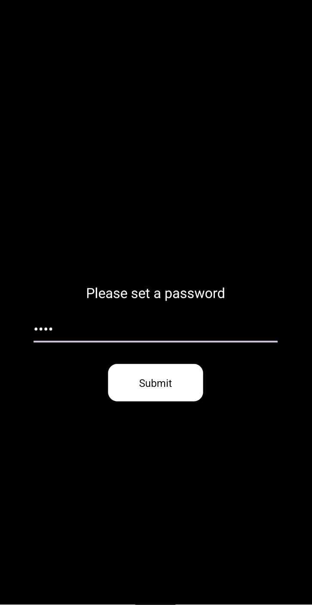
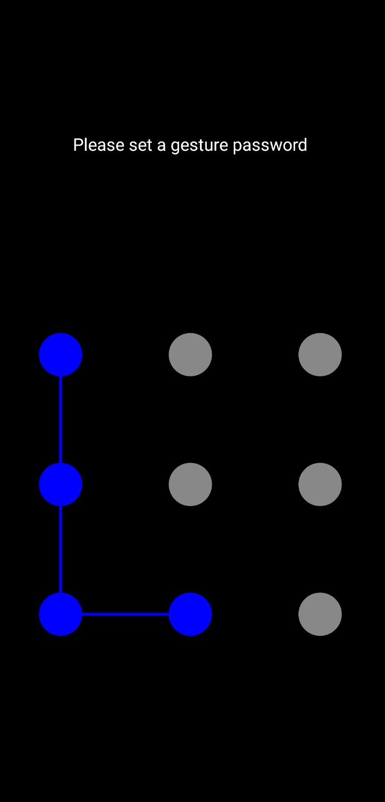
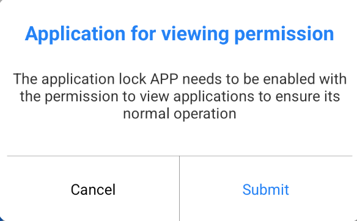
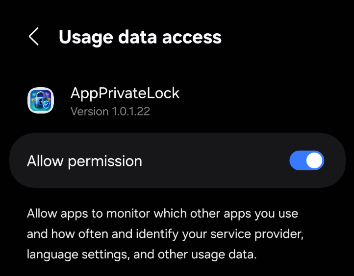
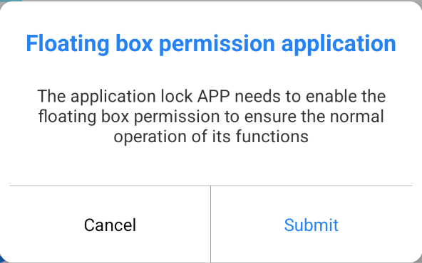
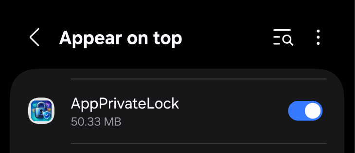
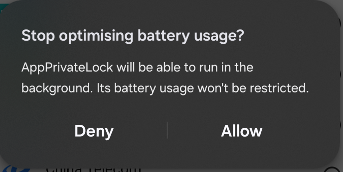
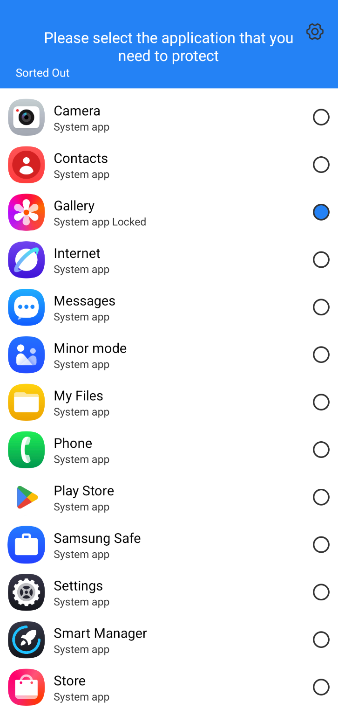
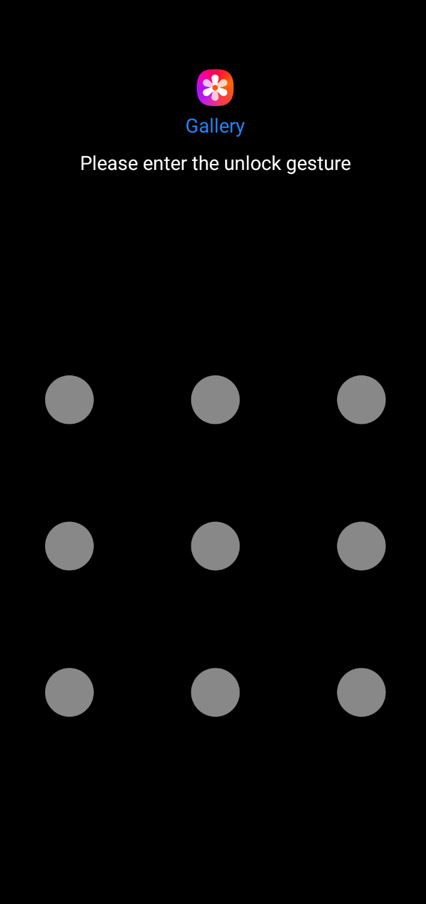

When you open the app for the first time, you will be prompted to create a password or gesture password. This password will be used to unlock protected apps.


To ensure the app lock functions correctly, grant the necessary permissions, such as app data access permissions, pop-up permissions, and the ability to ignore battery optimizations.





Open the app list and select the apps you want to protect. After selection, these apps will require a password or gesture password before opening.

Once set up, the applications you select will be protected. Anyone attempting to open these applications will be required to enter the correct password or gesture password.
